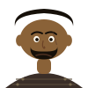

1 Sm 17
Guerreiro gigante filisteu de Gate que desafia diariamente o exército israelita para um combate individual — até ser derrotado pelo jovem David com uma simples funda e uma pedra, num dos episódios mais conhecidos de toda a Bíblia.
A vitória não depende do tamanho do adversário quando Deus está do nosso lado.
"Vem a mim, e darei a tua carne às aves do céu" — 1 Sm 17:44
A sua derrota, com uma simples funda, é um dos episódios mais conhecidos de toda a Bíblia.
Sem relações familiares registadas — figura estrangeira, sem ligação de sangue às restantes personagens deste grafo.
A descrição detalhada da sua armadura pesada (1 Sm 17:5-7) contrasta deliberadamente com a simplicidade das armas de David, reforçando o tema central do episódio: a vitória não depende do poder militar.